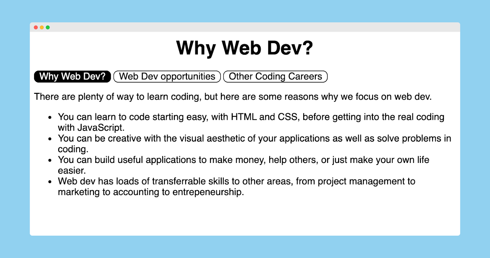
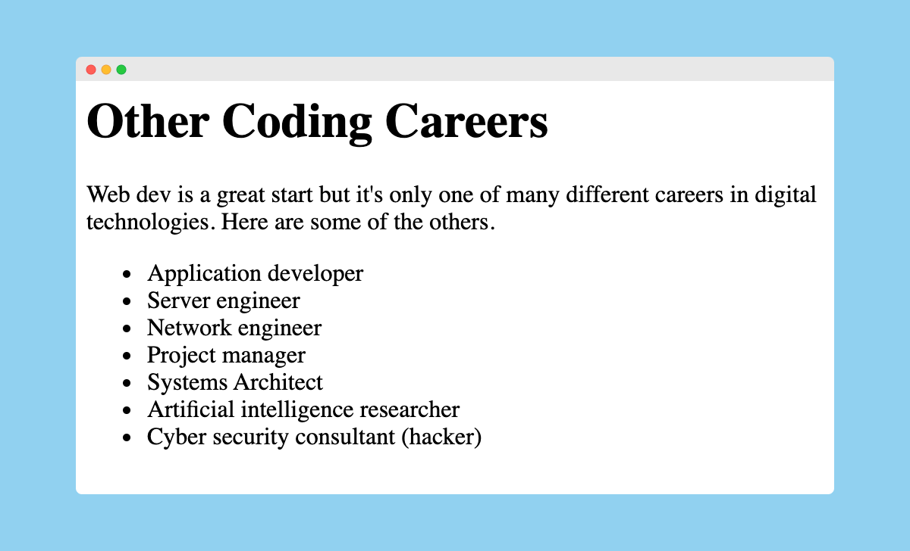

You'll build a multipage website with some reasons why we choose to learn web development.
It'll have the following features:
Here's what it might look like:

and either
or
If you're working on GitHub Desktop and Visual Studio Code on your own laptop, follow the steps in the Local section.
If instead you're using GitHub Codespaces, follow the steps in the Codespaces section.
Command + Shift + A on MacOS or Ctrl + Shift + A on Windows)index.htmlindex.htmlNow you're ready to get coding!
Read over your HTML and compare it with what you see on the page in the browser.
Often your client will give you the content to add to a website. This is the content you need to add to the other-careers.html page:
Other Coding Careers
Web dev is a great start but it's only one of many different careers in digital technologies. Here are some of the others.
and this is what the page should look like in the browser:

You now have two different web pages but no way to get from one to the other. To do this, we'll need links.
Copy and paste this code below the main heading of your index.html file:
<a href="opportunities.html"> Web Dev Opportunities </a>Save and check your website in your browser. You should see a link that you can click to take you to your second page.
Unfortunately, there's no way back to the home page.
index.html)The navigation of your website could be made easier for your users in two ways:
Update the code on your index.html file to include all the pages, including the current one:
<a href="index.html"> Home </a>
<a href="opportunities.html"> Web Dev Opportunities </a>
<a href="other-careers.html"> Other Coding Careers </a>The other pages need to be tidied up as well.
Copy and paste this code at the bottom of your front page:
<style>
* {
font-family: sans-serif;
}
h1 {
text-align: center;
}
a {
text-decoration: none;
color: black;
border: 1px solid black;
border-radius: 0.5em;
padding-left: 0.5em;
padding-right: 0.5em;
}
a:hover {
color: white;
background-color: black;
}
</style>Style the page your way.
display: block;
index.html file.
Rename the image to html-logo.svg so that it's easier to type into the code.
Add this line into the code on your index.html.
<img src="html-logo.svg">If your image isn't showing, check:
filename is the same as the src attributeAdjust your image the way you want it to look:
img element in the code where you want the image to appearOften, images aren't the right size and need to be styled to fit into the web page.
First, we'll change the size of your image. Copy and paste this code into your style element:
img {
width: 50rem;
}Adjust your images the way you want them to look:
marginCongratulations, the first iteration of your site is complete.
You've created three pages and linked them together into a site.
Along the way, you've learnt about these parts of coding.
(➕ means new things in this project)
HTML code
h1 for main headingsh2 for subheadingsp for paragraphsul for unordered lists (bullet points)li for list items inside an unordered liststyle for CSS styling➕ a for links
➕ href attribute in a opening tags
➕ img for images
➕ src attribute in img opening tags
HTML vocabulary
< and >➕ attribute - extra information inside the pointy brackets of an opening tag, such as a file name
CSS code
background-color: to change the background colour of an elementfont-family: to change what letters look likefont-size: to change the size of textcolor: to change the colour of texttext-align: to move text to the left, center, or righttext-decoration: to add or remove underlines and line-throughstext-transform: to change text to all uppercase or lowercasetext-shadow: to add a shadow to textmargin-(top, bottom, left, right): to add space around the outside of an elementpadding-(top, bottom, left, right): to add space around the inside of an element➕ width: for the width
➕ height: for the height
CSS vocabulary
Elements on a web page can be in different states, such as being hovered over.
Copy and paste this code into your style element:
a:hover {
background-color: black;
}Open your page in the browser and hover over your links with your cursor.
Experiment with :hover
Usually, a website will indicate which page you're on in the list of links by highlighting it a different color.
Most frequently, a good Google search will be the best option. Remember to include the keywords "CSS" and "class" so that Google will give you the best results (skip past the ads though!).
If you don't find anything useful, try one of these.